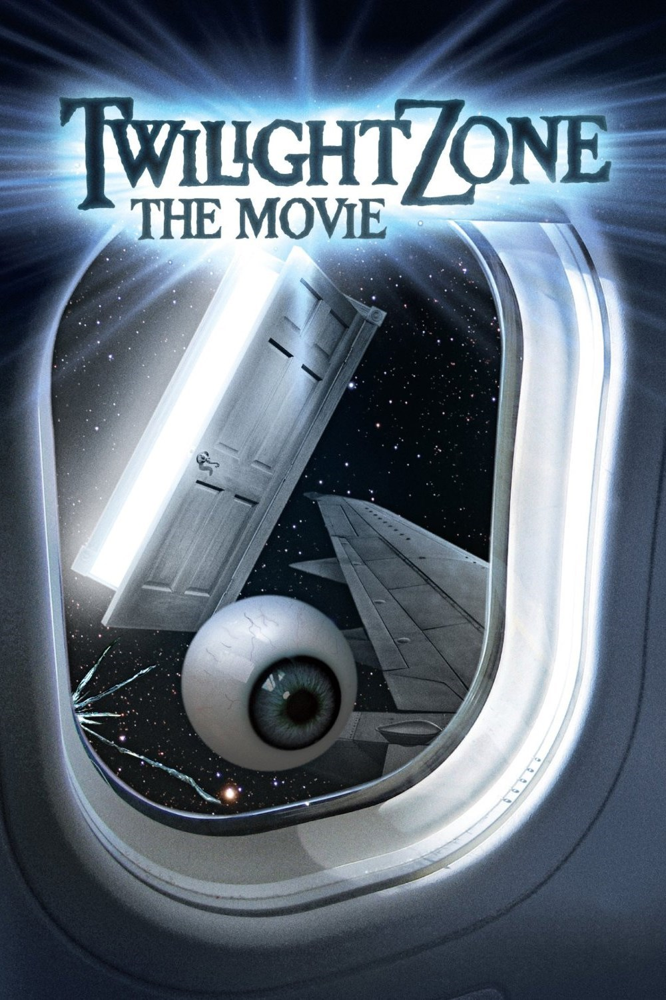

Le film
Quand un film nous amène à la frontière de notre Imagination.
« La quatrième dimension » est un film de science-fiction aux nombreux co-réalisateurs (voir article suivant) sortit en 1983 basé sur une série du même nom : la quatrième dimension. Il s’en inspire par une forme segmentée. Chaque segment s’inspire d’un épisode de la série, et est produit par un réalisateur différent. Le fil directeur est la présentation d’histoires normales qui dérapent dans un monde imaginaire, la touche de peur et de magie variant d’une section à l’autre. Effets spéciaux garantis !
« Pour ouvrir cette porte : une clé, l’imaginaire. Au-delà s’étend une autre dimension : une dimension du son, une dimension de la vue, une dimension de l’esprit. Vous vous déplacez à la frange de l’ombre et de la substance des choses et des idées. Vous venez de péntétrer dans la quatrième dimension.»
Introduction du film et de la série.
Les réalisateurs

Ces auteurs de renom ont produit un film pourtant méconnu.
Dans l’ordre des sections tournées, le premier est John Landis. Il prend en charge le prologue et la première section. Ce réalisateur, acteur, producteur et scénariste américain est né en 1950 à Chicago.
Ses œuvres les plus populaires sont « Le bon, la brute et le truand » ou encore le clip de « Thriller » de Michael Jackson.
Le second n’est autre que l’illustre Steven Spielberg. Pour rappel, Il est réalisateur, scénariste et producteur américain né en 1946 dans l’Ohio.
Ses œuvres les plus populaires sont « Les dents de la mer », « E.T. », « Jurassic Park » « Transformers » et plein d’autres...
Vient ensuite Joe Dante, cinéphile, critique, monteur, scénariste, producteur et réalisateur américain né en 1946 dans le New Jersey.
Il est connu pour avoir produit les deux films «Gremlins» et « Gremlins2 » ainsi que « Piranhas », il a aussi réalisé quelques épisodes de « Hawaii five-0 », « les Experts »...
On termine avec un quatrième segment réalisé par George Miller, un réalisateur, scénariste et producteur australien né en 1945.
On lui doit en particulier la série Mad Max. il participe actuellement à la production de « la ligue des justiciers » de Zack Snyder à paraitre en 2017.
Le tournage de la première section est assombri par la mort par écrasement et décapitation de 3 acteurs lors du crash d’un hélicoptère de tournage.
Evènement tragique de tournage.
(voir vidéo)